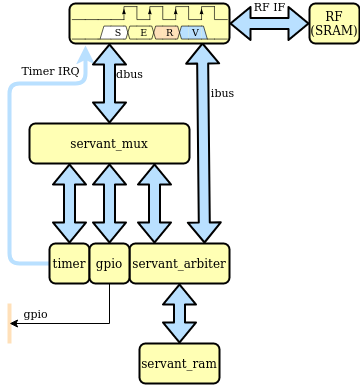

Reference platform¶
SERV comes with a small FPGA-focused reference platform called Servant, which is capable of running Zephyr RTOS, the regression test suite and other software. The platform consists of SERV, a timer, memory and a 1-bit GPIO output pin.
Available targets¶
The servant SoC has been ported to an increasing number of different FPGA boards and is easy to modify for new targets. To see all currently supported targets run:
fusesoc core show servant
By default, these targets have the program memory preloaded with a small Zephyr hello world example that writes its output on a UART pin. Don’t forget to install the appropriate toolchain (e.g. icestorm, Vivado, Quartus…) and add to your PATH
Some targets also depend on functionality in the FuseSoC base library (fusesoc-cores). Running fusesoc library list should tell you if fusesoc-cores is already available. If not, add it to your workspace with
fusesoc library add fusesoc-cores https://github.com/fusesoc/fusesoc-cores
Now we’re ready to build. Note, for all the cases below, it’s possible to run with –memfile=$SERV/sw/blinky.hex (or any other suitable program) as the last argument to preload the LED blink example instead of hello world.
Alhambra II¶
Pin 61 is used for UART output with 115200 baud rate. This pin is connected to a FT2232H chip in board, that manages the communications between the FPGA and the computer.
fusesoc run –target=alhambra servant iceprog -d i:0x0403:0x6010:0 build/servant_1.0.1/alhambra-icestorm/servant_1.0.1.bin
Alinx ax309 (Spartan6 LX9)¶
Pin D12 (the on-board RS232 TX pin) is used for UART output with 115200 baud rate and wired to Pin P4 (LED0).
fusesoc run –target=ax309 servant
Arty A7 35T¶
Pin D10 (uart_rxd_out) is used for UART output with 57600 baud rate (to use blinky.hex change D10 to H5 (led[4]) in data/arty_a7_35t.xdc).
fusesoc run –target=arty_a7_35t servant
Chameleon96 (Arrow 96 CV SoC Board)¶
FPGA Pin W14 (1V8, pin 5 low speed connector) is used for UART Tx output with 115200 baud rate. No reset key. Yellow Wifi led is q output.
fusesoc run –target=chameleon96 servant
DE0 Nano¶
FPGA Pin D11 (Connector JP1, pin 38) is used for UART output with 57600 baud rate. DE0 Nano needs an external 3.3V UART to connect to this pin
fusesoc run –target=de0_nano servant
DE10 Nano¶
FPGA Pin Y15 (Connector JP7, pin 1) is used for UART output with 57600 baud rate. DE10 Nano needs an external 3.3V UART to connect to this pin
fusesoc run –target=de10_nano servant
DECA development kit¶
FPGA Pin W18 (Pin 3 P8 connector) is used for UART output with 57600 baud rate. Key 0 is reset and Led 0 q output.
fusesoc run –target=deca servant
EBAZ4205 ‘Development’ Board¶
Pin B20 is used for UART output with 57600 baud rate. To use blinky.hex change B20 to W14 (red led) in data/ebaz4205.xdc file).
fusesoc run –target=ebaz4205 servant
fusesoc run –target=ebaz4205 servant –memfile=$SERV/sw/blinky.hex
Reference: https://github.com/fusesoc/blinky#ebaz4205-development-board
Icebreaker¶
Pin 9 is used for UART output with 57600 baud rate.
fusesoc run –target=icebreaker servant
iCEstick¶
Pin 95 is used as the GPIO output which is connected to the board’s green LED. Due to this board’s limited Embedded BRAM, programs with a maximum of 7168 bytes can be loaded. The default program for this board is blinky.hex.
fusesoc run –target=icestick servant iceprog build/servant_1.2.1/icestick-icestorm/servant_1.2.1.bin
iCESugar¶
Pin 6 is used for UART output with 115200 baud rate. Thanks to the onboard debugger, you can just connect the USB Type-C connector to the PC, and a serial console will show up.
fusesoc run –target=icesugar servant
ICE-V Wireless¶
Pin 9 is used for UART output with 57600 baud rate.
fusesoc run –target=icev_wireless servant
iceprog build/servant_1.2.1/icestick-icestorm/servant_1.2.1.bin
Nandland Go Board¶
Pin 56 is used as the GPIO output which is connected to the board’s LED1. Due to this board’s limited Embedded BRAM, programs with a maximum of 7168 bytes can be loaded. The default program for this board is blinky.hex.
fusesoc run –target=go_board servant iceprog build/servant_1.2.1/go_board-icestorm/servant_1.2.1.bin
Nexys 2¶
Pmod pin JA1 is conntected to UART tx with 57600 baud rate. A USB to TTL connector is used to display to hello world message on the serial monitor. (To use blinky.hex change L15 to J14 (led[0]) in data/nexys_2.ucf).
fusesoc run –target=nexys_2_500 servant –uart_baudrate=57600 –firmware=$SERV/sw/zephyr_hello.hex
OrangeCrab R0.2¶
Pin D1 is used for UART output with 115200 baud rate.
fusesoc run –target=orangecrab_r0.2 servant dfu-util -d 1209:5af0 -D build/servant_1.2.1/orangecrab_r0.2-trellis/servant_1.2.1.bit
Saanlima Pipistrello (Spartan6 LX45)¶
Pin A10 (usb_data<1>) is used for UART output with 57600 baud rate (to use blinky.hex change A10 to V16 (led[0]) in data/pipistrello.ucf).
fusesoc run –target=pipistrello servant
SoCKit development kit¶
FPGA Pin F14 (HSTC GPIO addon connector J2, pin 2) is used for UART output with 57600 baud rate.
fusesoc run –target=sockit servant
TinyFPGA BX¶
Pin A6 is used for UART output with 115200 baud rate.
fusesoc run –target=tinyfpga_bx servant tinyprog –program build/servant_1.0.1/tinyfpga_bx-icestorm/servant_1.0.1.bin